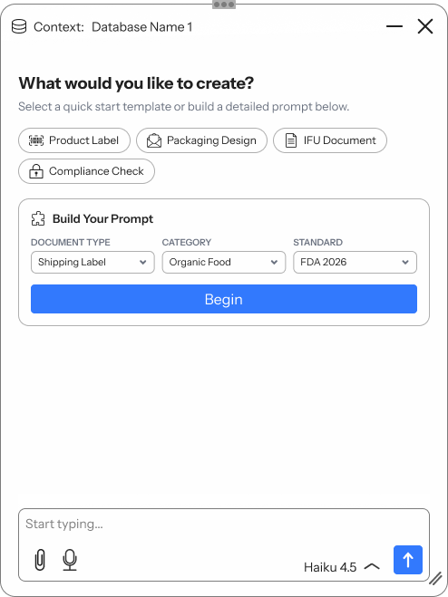
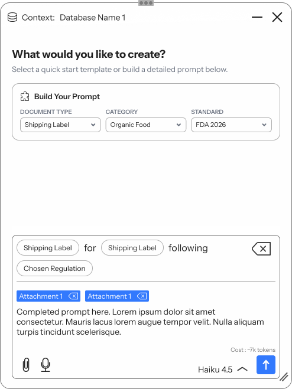
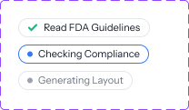
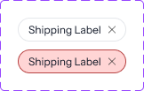
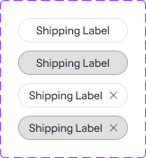
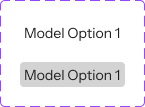
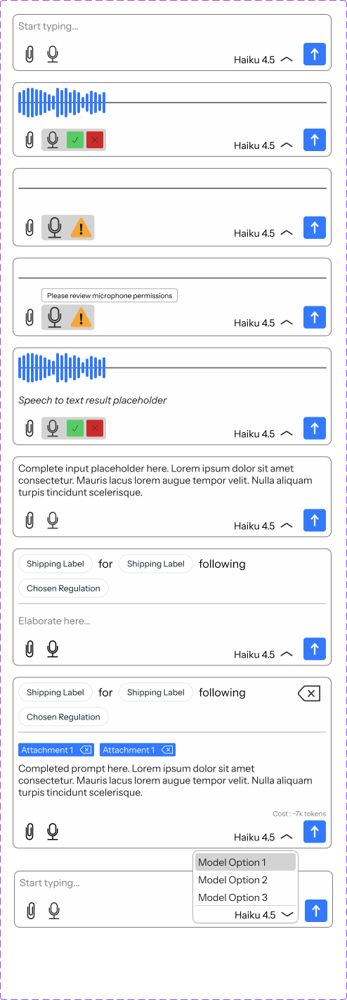

enLabel makes packaging and labeling software, from label creation in e-Draw to regulated documents in eIFU. Every product wanted an AI assistant. I designed one chat window that works inside any of them, drawing on the data it's opened with.
First in-context application: e-Draw, enLabel's label creation software.


A prompt builder that writes the hard part
In regulated labeling, a missing standard or category means a wrong label. Structured inputs make sure the critical details are in every prompt, without taking away free text.
The AI asks instead of guessing
Problem → vague prompts produce confident but wrong output.
Decision → follow-up question cards with numbered answers, an "Other" field and paging (1 of X).
Outcome → missing details get resolved before generation, in a few clicks.
Generation you can see and stop
Problem → long AI tasks feel like a black box.
Decision → step chips (Read guidelines → Check compliance → Generate layout), an always-on Stop and token cost before and after.
Outcome → users know what's happening, what it costs and how to bail out.
{{ stepTitle }}
{{ stepBody }}
Every piece is product-agnostic. Each product swaps in its own data source, quick prompts and builder fields, and the shell stays the same.





Designing a shell for many products meant deciding what stays fixed and what each product gets to change.
Handed off to developers; launch pending. Next: test with e-Draw users once it's live, then bring the same shell to eIFU and the rest of the ecosystem.